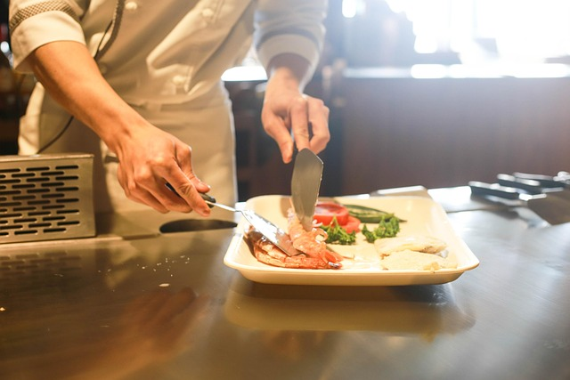
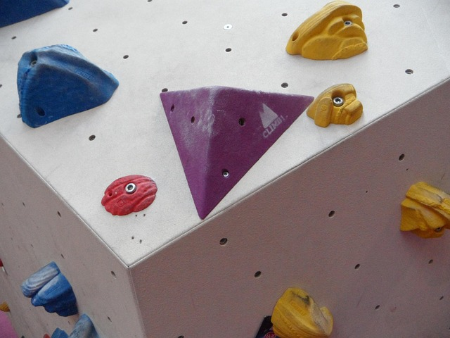

O meni
Zovem se Jerko Radić i trenutno sam student na Grafičkom fakultetu u Zagrebu. Imam 21 godinu i dolazim iz Rijeke. U slobodno vrijeme bavim se penjanjem, kuhanjem te sviram gitaru. Na fakultetu se nadam naučiti kako ideje na kvalitetan i profesionalan način prenijeti u konkretna i primjenjiva rješenja. Zanima me vizualna komunikacija i kreativno rješavanje problema, a posebno me motivira rad na projektima koji spajaju estetiku i funkcionalnost.


Poveznica na video koji me inspirira: